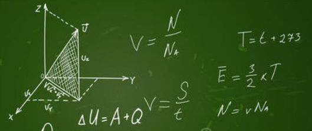

我们关于事物价size="3值大小的判断，取决于事物在我们身上激起的 * 感情 * 。 我们有时根据我们构造的关于某一事物的 *观念* 就断定这一事物是珍贵的， 这仅仅是因为观念自身已经与某种感情联系在一起了。 如果我们根本没有感情， 如果我们心里只能容纳观念， 那么，我们就会一下子丧失所有的喜爱和厌恶， 无法指出某种生活境况或生活经验是否比其他境况或经验更有价值或更有意义。
我们是实际的存在物，每个人都履行着有限的职能和责任。 每个人都必定会强烈地感觉到他自己的责任的重要性和唤起这种责任的境况的意义。 这种感觉是我们每个人的生存秘密， 我们徒劳地希望他人也感受到我们的生存秘密。 其他人也过分沉浸在他们自己的生存秘密之中， 以至很难对我们的生存秘密感兴趣。 因此，在论及他人生活的意义时， 我们的意见是愚蠢的，不公正的。 因此，在独断专行地决定其他人的境况或理想的价值时， 我们的判断往往是错误的。

我们与爱犬之间有一条比世界上大多数纽带都紧密的纽带。 可是，除了这条友好喜爱的纽带之外， 我们相互之间对那些使彼此生命有意义的东西，又是多么麻木不仁啊！ 我们没有感受到树篱下的肉骨头引起的狂喜， 没有闻到树木和灯杆发出的气味， 同样，它们也从未体验过文学艺术的乐趣。 当你坐在那儿读一本平生最使你感兴趣的小说时， 你的猎狐小狗会对你的行为做出什么判断呢？ 他虽对你满怀善意，但你的举止却完全超出了它的理解力。 你满可以带它去散步，把棍子扔出去让它捕捉。 可是，你却像一座全无知觉的雕像一样坐在那儿！ 你天天都得了多么奇怪的病啊： 一连几个小时捧着某种东西盯着看， 丧失了运动机能和一切意识活动。 非洲野蛮人曾经比较接近真理。 但是，当他们好奇地围观某个美国旅行者时， 他们也失去了真理。 那个美国旅行者刚刚捡到一本别人丢失的《纽约商业广告》， 并一栏一拦地仔细阅读。 他看完后，那些非洲人要出高价卖这个奇妙的东西。 他问他们买它干什么，他们说，“做眼药呵”– 对于他把目光长时间地停留在那个东西上， 这是他们可以想得到的唯一解释。 旁观者的判断肯定抓不住事情的本质， 肯定是不正确的。 被判断的主体知道进行判断的旁观者所不了解的一部分现实世界； 他知道得较多，而旁观者却知道得较少。 无论在哪里，只要出现了意见冲突和见解差异，我们都必定相信， 较为正确的一方是那感受较多的一方，而不是感受较少的一方。 我来举一个每个人天天都可以碰到的例子： 几年前，我在北卡罗来纳山区旅行时，经过许多当地所谓的“山凹”， 及两山之间小山谷的深处。 那里新近才被开垦种植。 给我的印象是乱糟糟的一片。 开垦者总是砍掉容易砍的树木，留下烧焦的树桩。 对于较高大的树木，他就用剥皮的方法把它们弄死， 使它们的叶子不遮挡阳光。 然后，他盖起小木屋，用灰泥抹好小木屋的缝隙， 并在他破坏过的土地四周竖起高高的，蜿蜒曲折的栅栏， 以免野猪和野牛闯进来。 最后，他在树桩和枯树之间的空地上参差不齐地种上玉米， 这些谷物就在碎木石块间生长。 他跟妻子儿女居住在那里– 全部财产只是一把斧子，一杆枪，几件用具以及一些在林中放养的猪和鸡。